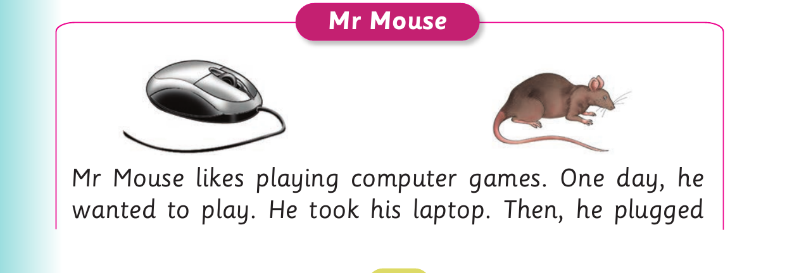

Reading stories fluently - continued
![For Reading stories fluently - continued, panel 1 of 2 shows this reviewed visual content: An illustration shows Mr Kite in a tree watching Ms Hen and her chicks, followed by pictures of a computer mouse and an animal mouse. The printed labels and instructions include: for it again. She did not find it. Mr Kite was on the tree watching angrily. Suddenly, Mr Kite attacked Ms Hen. Ms Hen had to run away. Mr Kite decided to take Ms Hen’s chick. Since that day, Ms Hen and Mr Kite have been enemies. Ms Hen still searches for the needle by scratching the ground. Mr Kite also steals Ms Hen’s chicks.](images/pg084_sec001_panel01.png)
for it again. She did not find it. Mr Kite was on the tree watching angrily. Suddenly, Mr Kite attacked Ms Hen. Ms Hen had to run away. Mr Kite decided to take Ms Hen’s chick. Since that day, Ms Hen and Mr Kite have been enemies. Ms Hen still searches for the needle by scratching the ground. Mr Kite also steals Ms Hen’s chicks.
Activity 2
Read the following story aloud:

Mr Mouse Mr Mouse likes playing computer games. One day, he wanted to play. He took his laptop. Then, he plugged